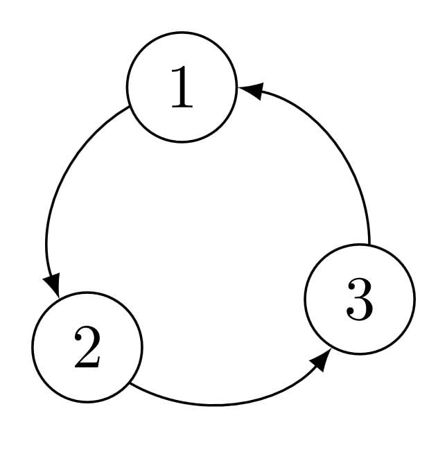

AB2 Rekursive Ausdrücke
Implementieren Sie die folgenden Funktionen nur unter Verwendung der bereits importierten Funktionen. Folgende Sprachkonstrukte dürfen nicht verwendet werden:
if ... then ... else ... (benutzen Sie stattdessen if' sofern importiert)- Guards
- List Comprehensions:
[(i,j) | i <- [1,2], j <- [3,4]]
Arithmetic Sequences
[i .. j] sind nun erlaubt und an einigen Stellen auch notwendig (entspricht der Funktion
listFromTo).
Die nachfolgenden Probleme können alle durch Selbstreduktion gelöst werden. Bei dieser algorithmischen Technik wird ein Problem gelöst, indem eine Instanz (Eingabe) mithilfe einer
Reduktionsregel in eine (manchmal auch mehrere) kleinere Instanz umgewandelt wird, für welche rekursiv eine Lösung berechnet wird. Aus der Lösung der kleineren Instanz wird dann die Lösung für die ursprüngliche Instanz berechnet. Instanzen, auf welche die Reduktionsregel nicht angewendet wird, nennen wir
irreduzibel. Für solche Instanzen gibt es einen separaten Teil im Algorithmus, welcher die Lösung berechnet.
Eine Liste ist (aufsteigend) sortiert gdw. für alle benachbarten Elemente der Liste gilt, dass das linke Element nicht größer ist als das rechte. Wir bezeichnen zwei benachbarte Elemente in einer Liste als
u-Zeugen (u = unsortiert), falls das linke Element größer ist als das rechte. Das heißt, eine Liste ist sortiert gdw. sie keine u-Zeugen enthält. Ist eine Liste unsortiert, können wir den ersten u-Zeugen nehmen und die beiden Elemente vertauschen. Wiederholt man dies ausreichend oft, dann ist die Liste sortiert. Dieser Algorithmus kann als eine Vorstufe von BubbleSort betrachtet werden.
unorderedWitnesses :: (Ord a) => [a] -> [Int]
swap :: Int -> Int -> [a] -> [a]
primitiveSort :: (Ord a) => [a] -> [a]
Die Funktion
unorderedWitnesses gibt die Liste der u-Zeugen von
arg1 zurück. Ein u-Zeuge wird dabei durch den Index des linken Elements beschrieben. Beispiele:
unorderedWitnesses [2,1,4,7,0] = [0,3]unorderedWitnesses [1,2,3,4] = []
Die Funktion
swap vertauscht die Elemente mit Index
arg1 und
arg2 in
arg3.
Die Funktion
primitiveSort gibt
arg1 in aufsteigend sortierter Reihenfolge zurück. Die Funktion soll durch den obigen Algorithmus implementiert werden.
Für diesen Teil können Sie davon ausgehen, dass alle Eingabeparameter ≥ 0 sind.
add :: Int -> Int -> Int
mult :: Int -> Int -> Int
pow :: Int -> Int -> Int
Die Funktion
pow ist definiert als
arg1 ^ arg2.
genericArithmetic :: (Int -> Int) -> (Int -> Int -> Int) -> Int -> Int -> Int
Die Funktion
genericArithmetic soll so definiert werden, dass folgende Spezifikation gilt ('?' müssen passend ersetzt werden):
add x y = (genericArithmetic id ?) x y
mult x y = (genericArithmetic ? ?) x y
pow x y = (genericArithmetic ? ?) x y
Ein gerichteter Graph \(G\) ist azyklisch gdw. er keine Knoten enthält oder wenn seine reduzierte Form \(G'\) azyklisch ist. Den Graph \(G'\) erhält man, indem alle Knoten aus \(G\) gelöscht werden, welche nicht mindestens einen eingehenden und einen ausgehenden Nachbarn haben. Solche Knoten können nicht Teil eines Zyklus sein.

Im obigen Graph ist 2 ein ausgehender Nachbar von 1 und 3 ein eingehender Nachbar von 1. Dieser Graph wird in Code wie folgt ausgedrückt:
Graph [(1,[2]),(2,[3]),(3,[1])].
type Vertex = Int
type OutNeighbors = [Vertex]
data Graph = Graph [(Vertex,OutNeighbors)] deriving (Eq, Show, Read)
isEmptyGraph :: Graph -> Bool
vertices :: Graph -> [Vertex]
Ein Graph ist codiert als Liste von Tupeln, wobei der erste Teil den Knoten enthält und der zweite die Liste der ausgehenden Nachbarn dieses Knotens. Sie können davon ausgehen, dass die Listen der ausgehenden Knoten keine Duplikate enthalten und jeder ausgehende Nachbar auch als Knoten im Graphen existiert.
Die Funktion
isEmptyGraph ist wahr gdw. der Graph keine Knoten enthält.
Die Funktion
vertices gibt die Liste aller Knoten eines Graphen zurück.
inNeighbors :: Vertex -> Graph -> [Vertex]
outNeighbors :: Vertex -> Graph -> [Vertex]
reduction :: Graph -> Graph
acyclic :: Graph -> Bool
Die Funktion
inNeighbors gibt die eingehenden Nachbarn von Knoten
arg1 in Graph
arg2 zurück.
Die Funktion
outNeighbors gibt die ausgehenden Nachbarn von Knoten
arg1 in Graph
arg2 zurück.
Die Funktion
reduction gibt die reduzierte Form \(G'\) eines Graphen \(G\) zurück.
Die Funktion
acyclic gibt wahr zurück gdw. der Graph azyklisch ist. Die Funktion soll durch die obige Reduktionsregel implementiert werden.
Die Menge aller nicht-leeren Teilmengen einer Menge \(M\) besteht aus \(M\) (sofern \(M\) selbst nicht die leere Menge ist) und der Menge aller nicht-leeren Teilmengen von \(M_1, M_2, \dots, M_n\) wobei \(n = |M|\) und \(M_i\) gleich der Menge \(M\) ohne das \(i\)-te Element ist.
subsets :: (Ord a) => [a] -> [[a]]
kSubsets :: (Ord a) => Int -> [a] -> [[a]]
Die Funktion
subsets gibt eine Liste zurück, welche jede nicht-leere Teilmenge von
arg1 enthält (Duplikate sind erlaubt und die Reihenfolge kann beliebig sein). Falls
arg1 die leere Liste ist, dann ist der Rückgabewert von
subsets auch die leere Liste. Sie können davon ausgehen, dass
arg1 kein Element doppelt enthält. Die Funktion soll durch die obige Reduktionsregel implementiert werden.
Die Funktion
kSubsets gibt eine Liste zurück, welche alle Teilmengen von
arg2 mit
arg1 ≥ 1 Elementen enthält (ohne Duplikate, Reihenfolge beliebig).
Eine \(k\)-stellige boolesche Funktion \(f\) ist erfüllbar gdw. \(f_0\) oder \(f_1\) erfüllbar ist, wobei \(k \geq 1\) und \(f_i\) die \((k-1)\)-stellige Funktion ist, welche aus \(f\) hervorgeht, wenn der erste Parameter auf \(i\) festgelegt wird.
data BooleanFunction = BooleanFunction ([Bool] -> Bool) [Bool] Arity
eval :: [Bool] -> BooleanFunction -> Bool
partialApply :: Bool -> BooleanFunction -> BooleanFunction
Eine boolesche Funktion beliebiger Arität ist als
BooleanFunction codiert. Die Funktion
partialApply legt den ersten Parameter der Funktion
arg2 auf
arg1 fest (die festgelegten Parameter werden im zweiten Argument vom Konstruktor
BooleanFunction gespeichert); die Arität der zurückgegebene boolesche Funktion verringert sich entsprechend um eins. Die Funktion
eval wertet
arg2 für die Belegung
arg1 aus; die Länge von
arg1 muss gleich der Arität von
arg2 sein.
Beispiel
exampleFormula = (BooleanFunction f [] 3)
where
f [x1,x2,x3] = (not x1) && (x2 || x3)
eval [True,False,False] exampleFormula -- False
eval [False,True,False] exampleFormula -- True
sat :: BooleanFunction -> Bool
taut :: BooleanFunction -> Bool
Die Funktion
sat gibt wahr zurück gdw. die boolesche Funktion mindestens eine erfüllende Belegung besitzt. Die Funktion soll durch die obige Reduktionsregel implementiert werden.
Die Funktion
taut gibt wahr zurück gdw. jede Belegung die boolesche Funktion erfüllt.